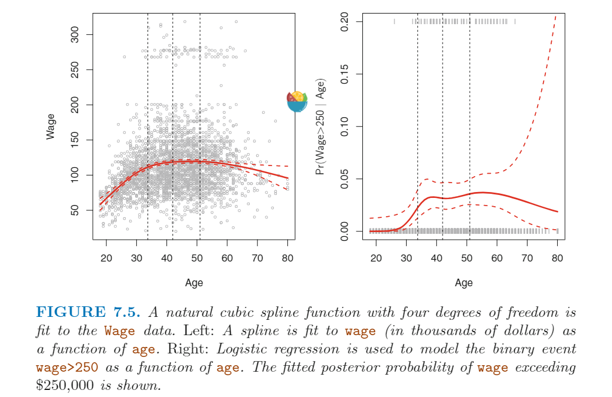

<!DOCTYPE html>


<html lang="zh-CN">


<head>
  <meta name="baidu-site-verification" content="codeva-NSg7ynviLa" />
  <meta charset="utf-8" />
    
  <meta name="viewport" content="width=device-width, initial-scale=1, maximum-scale=1" />
  <title>
    Generalized Additive Models |  
  </title>
  <meta name="generator" content="hexo-theme-ayer">
  
  <link rel="shortcut icon" href="/images/mojie.jpg" />
  
  
<link rel="stylesheet" href="/dist/main.css">

  <link rel="stylesheet" href="https://cdn.jsdelivr.net/gh/Shen-Yu/cdn/css/remixicon.min.css">
  
<link rel="stylesheet" href="/css/custom.css">

  
  <script src="https://cdn.jsdelivr.net/npm/pace-js@1.0.2/pace.min.js"></script>
  
  

  

<link rel="alternate" href="/atom.xml" title="null" type="application/atom+xml">
</head>

</html>

<body>
  <div id="app">
    
      
    <main class="content on">
      <section class="outer">
  <article
  id="post-Generalized-Additive-Models"
  class="article article-type-post"
  itemscope
  itemprop="blogPost"
  data-scroll-reveal
>
  <div class="article-inner">
    
    <header class="article-header">
       
<h1 class="article-title sea-center" style="border-left:0" itemprop="name">
  Generalized Additive Models
</h1>
 

    </header>
     
    <div class="article-meta">
      <a href="/posts/c49e8948/" class="article-date">
  <time datetime="2021-06-10T02:50:42.000Z" itemprop="datePublished">2021-06-10</time>
</a> 
  <div class="article-category">
    <a class="article-category-link" href="/categories/%E7%90%86%E8%AE%BA%E5%AD%A6%E4%B9%A0/">理论学习</a> / <a class="article-category-link" href="/categories/%E7%90%86%E8%AE%BA%E5%AD%A6%E4%B9%A0/%E7%BA%BF%E6%80%A7%E6%A8%A1%E5%9E%8B/">线性模型</a>
  </div>
  
<div class="word_count">
    <span class="post-time">
        <span class="post-meta-item-icon">
            <i class="ri-quill-pen-line"></i>
            <span class="post-meta-item-text"> 字数统计:</span>
            <span class="post-count">4.9k</span>
        </span>
    </span>

    <span class="post-time">
        &nbsp; | &nbsp;
        <span class="post-meta-item-icon">
            <i class="ri-book-open-line"></i>
            <span class="post-meta-item-text"> 阅读时长≈</span>
            <span class="post-count">17 分钟</span>
        </span>
    </span>
</div>
 
    </div>
      
    <div class="tocbot"></div>


  
    <div class="article-entry" itemprop="articleBody">
       
  <link rel="stylesheet" type="text/css" href="https://cdn.jsdelivr.net/hint.css/2.4.1/hint.min.css"><p>ISL 真是好书！</p>
<span id="more"></span> 
<h1>资料</h1>
<p><a target="_blank" rel="noopener" href="https://www.statlearning.com/">An Introduction to Statistical Learning</a>，下文简称 <strong>ISL</strong></p>
<h1>概述</h1>
<p>标准的线性回归模型，最大的问题在于线性的假设。实际情况中，这个假设可能不被满足。</p>
<p>这一章节是描述非线性关系的模型。</p>
<h1>Polynomial Regression</h1>
<p>多项式回归模型如下：</p>
<p style=""></p><p>一半来说，最高项一般设置为3或4，因为如果项数太高，那么可能会得到非常奇怪的图形。</p>
<p>下图中的左图为项数为4的多项式回归。</p>
<p></p>
<p>虚线为两个标准误差曲线，或者说置信区间的上下限。这是如何得到的呢？假设我们计算得到某个点 x<sub>0</sub> 的预测值，如下：</p>
<p style=""></p><p>那么这个点的预测值的方差等于多少呢？我们通过最小二乘法可以得到所有估计系数的估计方差，我们可以根据这个计算预测值的估计方差，计算方式如下图（ISL 的引用，没说清楚，没有证明）。</p>
<p></p>
<p>我们可以通过这种方法以<strong>逐点</strong>地方式得到所有点的预测方差（开方即可得到标准误估计值），所有点的预测值 + 两倍的标准误即为上方的误差曲线，所有点的预测值 - 两倍的标准误即为下方的误差曲线（2倍的标准误范围正好是95%的置信区间，实际是1.96，差不多）。</p>
<p>从上面左图可以看出，Wage 这个性状似乎分成了截然分开的两个群体，一部分人的薪资超过了 250,000 美元/年；然后其他人就是低收入群体。因此，Wage 其实可以变成一个二分类的分类变量。这里我们用多项式逻辑回归用于预测薪资大于 250,000 美元/年 的概率。预测结果见上面右图，我们可以看到右侧的置信区间非常大。虽然这里总的样本量很大（n=3000），但是这里其实只有 79个 高收入者，这导致系数估计的方差很高，最终预测结果的置信区间也很大。</p>
<p style=""></p><h1>Step Functions</h1>
<p>上面的多项式回归是对整个定义域进行拟合，我们可以用 <em>step functions</em> 来把整个定义域分段，对于每一段进行单独的估计，这就将一个连续自变量转变成了一个 <em>ordered categorical variable</em> 。</p>
<p>更详细地说，我们会在整个定义域创建 K 个断点 (c<sub>1</sub> , c<sub>2</sub> , …… ， c<sub>k</sub>) ，创建 K+1 个新的变量。其中 <code>I()</code> 函数满足条件则为1，不满足条件则为0，因此这 K+1 个新变量中永远只有一个变量的值为1，其他均为0，一般也称为 <strong>哑变量</strong>。</p>
<p style=""></p><p>我们可以用后面 k个哑变量作为预测因子，拟合回归模型</p>
<p style=""></p><p>对于某个特定的自变量 x，这k个哑变量最多只有一个不为0。比如如果 x &lt; c<sub>1</sub> ，那么所有的预测因子全是0，因此预测值就是 β<sub>0</sub> 。其他 x 值依次类推。</p>
<p>同样，我们可以使用 <em>step functions</em> 进行逻辑回归</p>
<p style=""></p><p>下图左边是线性回归的 <em>step functions</em> 效果，右边为逻辑回归的效果。</p>
<p></p>
<p>**不幸的是，除非因变量X本身存在自然断点，<em>step function</em> 效果一般不好。**举例而言，上图左图一开始的区间没有体现出wage 随 age 递增的趋势。</p>
<h1>Basis Functions</h1>
<p>多项式回归与分段回归其实都是 <em>basis function</em> 方法的特例。<em>basis function</em> 的思路是通过一些熟悉的函数/转换应用到自变量 X 上：b<sub>1</sub>(X), b<sub>2</sub>(X), …… ，b<sub>k</sub>(X) 。</p>
<p>因此，我们用下面的模型，替换正常的包含X变量的线性模型：</p>
<p style=""></p><p>这里的 <em>basis function</em> 除了多项式和分段函数外，还有其他选择，比如下面的 <em>regression splines</em> 。</p>
<h1>Regression Splines</h1>
<h2 id="Piecewise-Polynomials">Piecewise Polynomials</h2>
<p>分段多项式回归对不同的自变量X的区段进行拟合。例如一个分段三次项回归的模型如下：</p>
<p style=""></p><p>这里不同区段会拟合得到不同的 β<sub>0</sub> 等系数。系数发生改变的点称为 <em>knots</em>。例如只有一个断点 c 的分段多项式回归模型如下：</p>
<p style=""></p><p>如果 <em>knots</em> 很多，整个模型的 <em>flexibility</em> 会很高，这时候对于每个区段，我们可能不用多项式回归，而是直接用线性回归。例如，上面的 <em>step function</em>s 其实就是这里 自由度为 0 的一个特例。</p>
<p>下图 7.3 中左上角的图就是一个 <em>knot</em> 的分段三次项回归结果，我们看到有一个问题，整个函数不是连续的（两个分段的模型在断点的预测值不同）。由于每个分段的模型有 4 个参数，因此这里我们整个模型有8个参数，自由度为 8 。</p>
<p></p>
<h2 id="Constrains-and-Splines">Constrains and Splines</h2>
<p>为了避免上面这个问题，我们可以加一个限制条件，就是最终拟合的函数必须是连续的，即两个分段函数在断点的值是相同的。上图 7.3 右上方就是加了这个限制条件的结果，效果更好了，但是总的函数在断点处呈现 v 字型，这看上去不自然。在左下图中又加了两个限制条件，断点两侧两个函数的<strong>一级导数</strong>和<strong>二级导数</strong>是连续的，因此整个函数更加 <em>smooth</em> 。我们每增加一个限制条件，就会减少一个自由度。因此左下方拟合函数的自由度为 5 （3个限制条件，8-3=5），一般也称为 <em><strong>cubic spline</strong></em> 。一般来说，K 个断点的 <em>cubic spline</em> 的总体自由度为 4+K 。</p>
<p>图 7.3 的右下图是 <em>linear spline</em> 的结果，它在断点是连续的。一般来说 <em>degree-d spline</em> 定义为分段的 自由度为d 的 多项式回归（最高项为 d），并且在每个断点追到到 d-1 自由度的导数都是连续的。因此，<em>linear spline</em> 只要求断点是连续的。</p>
<h2 id="The-Spline-Basis-Representation">The Spline Basis Representation</h2>
<p>上面讨论的 <em>regression splines</em> 看上去有点复杂，我们还是可以通过 <em>basis functions</em> 来带入模型，将上面的 <em>cubic splines</em> 表示为</p>
<p style=""></p><p>这里可以有多种 <em>basis functions</em> 来描述 <em>cubic splines</em> ，最直接的方法就是从基础的三次型多项式出发 - x, x<sup>2</sup>, x<sup>3</sup>， 然后对于每个 <em>knot</em> 增加一个 <em>truncated power basis function</em> 。</p>
<p><em>truncated power basis function</em> 定义如下：</p>
<p style=""></p><p>这里的 ξ 就是 knot 。新增这一项只会导致三级导数不连续（一级导数和二级导数左右两侧都是0，而三级导数左侧是0，右侧是6）</p>
<p>换句话说，对于一个有 K 个 <em>knots</em> 的 <em>cubic spline</em> ，我们的回归模型中除了截距外，还有 K+3 个自变量，分别为</p>
<p style=""></p><p>因此，总共需要估计的参数是 K+4 个（加截距），因此总的自由度为 K+4 。</p>
<p>不幸地是，<em>splines</em> 针对外围的预测值（X 值很小或很大）会有很高的 variance 。下图显示了 3 个 <em>knots</em> 的结果，我们可以看到两个边界的置信区间明显更大。</p>
<p>下图中的 <em>natural spline</em> 是含有额外的 <em>boundary constraints</em> （函数要求在 boundary 处是线性的（boundary 指比最小的knot还要小，或比最大的 knot 还要大的区域））的 regression spline 。 <em>natural spline</em> 显示为红线。</p>
<p></p>
<h2 id="Choosing-the-Number-and-Locations-of-the-Knots">Choosing the Number and Locations of the Knots</h2>
<p>当我们执行 spline 算法时，我们应该在哪里安置 <em>knots</em> 呢？一般来说，变化大的区域安放的 <em>knots</em> 更多，变化小的区域放得少比较合理，但是实际情况一般是，先获取需要安放的 <em>knots</em> 数目，然后按照自变量的百分位点进行选取 <em>knots</em> 。</p>
<p>下图展示了一个例子，使用 <em>natural cubic spline</em> 进行拟合数据，<em>knots</em> 的位置在 age 自变量的 25th, 50th, 75th 分位点。这里总共有4个自由度<sup id="fnref:1"><a href="#fn:1" rel="footnote"><span class="hint--top hint--error hint--medium hint--rounded hint--bounce" aria-label="这里包括两个边界点，其实总共是 5 个 *knots* 。正常的 cubic spline 的自由度为 5+4 =9，但是由于 natural cubic spline 在两个边界处有线性限制，因此自由度为 9-4 = 5。下面怎么从5个自由度视为4个自由度没看懂，原话为：Since this includes a constant, which is absorbed in the intercept,we count it as four degrees of freedom.">[1]</span></a></sup>。</p>
<p></p>
<p>那么我们需要使用多少个 knots 呢？或者说我们的 spline 中的自由度应该是多少呢？一个选项是变量不同数目的 knots，然后看哪一种生成的拟合曲线最好。一个更客观的方法是使用交叉验证，计算所有test sets 的 test RSS 均值。下图显示为10倍交叉验证的结果，左边为 <em>natural splines</em> ，右图为 <em>cubic splines</em> ，可以看到这两种方法结果差不多。</p>
<p></p>
<h2 id="Comparison-to-Polynomial-Regression">Comparison to Polynomial Regression</h2>
<p>Regression spines 通常效果比普通的多项式回归更好。因为多项式回归是通过增加最高项的次数来增加模型的复杂性（例如，X<sup>15</sup>），但是 splines 则是通过增加 <em>knots</em> 的数目来实现这一点，一般来说 splines 结果更稳定。下图为自由度同样为15 的 <em>natural cubic spline</em> 和 多项式回归的结果，可以看出多项式回归在边界处的结果比较诡异。</p>
<p></p>
<h1>Smoothing Splines</h1>
<p>上面提到的 <em>regression splines</em> 是通过创建 <em>knots</em> 的方式，通过 <em>basis functions</em> ，最终可以应用最小二乘回归来计算系数。这里介绍一种不一样的创建曲线的方式。</p>
<p>在对一个数据集拟合成一条平滑曲线的过程中，我们实际想要做的是，找到某个函数，比如说是 g(x)，可以有效地拟合训练集的数据：即 RSS 很小。但是存在一个问题在于，如果对于 g(x) 不加任何限制，我们最终一定可以选择一个 g(x) 函数，使得RSS 等于 0 ，这就会出现 overfitting ，这个函数也会非常地 <em>flexible</em> 。</p>
<p>所以，我们真正想要地函数是，既满足 RSS 很小，同时很<strong>平滑</strong>（<em>smooth</em>）。</p>
<p>那么我们如何确保 g() 函数是平滑的呢？这里有很多方法可以实现这一点。一个自然的方法是找到一个 g() 函数，使得下式最小：</p>
<p style=""></p><p>这里 λ 是一个非负的调整参数。满足这个条件的 g() 函数一般称为 <em>smoothing spline</em> 。</p>
<p>这个式子其实是 “Loss + Penalty&quot; 的形式，就和 lasso/ 岭回归一样。这里的惩罚项时二阶导数的积分。粗略地说，一个函数的二阶导数衡量了函数的 <em>roughness</em> ：二阶导数越大， g(t) 在接近 t 的波动越大，反之则相反（直线的二阶导数是0，因此认为是 <em>perfectly smooth</em> ）。惩罚项是二阶导数的积分，也就是整个定义域内一阶导数的总的变化大小。如果 g() 函数非常平滑，那么这个惩罚项会很小，反而如果 g() 函数是 <em>jumpy  and variable</em> , 那么 g’(t) 变化会很显著，惩罚项会很大。</p>
<p>当 λ = 0，那么就没有惩罚效应，因此 g() 函数会非常曲折，可以完美解释 training set 中所有的观测值。如果 λ → ∞ ，那么 g() 函数会非常平滑，就是一条直线，实际上这时候 g() 函数就是最小二乘回归直线。</p>
<p>通过这种方法得到的 g(x) 函数有下面的特性：它是分段三项式回归，其中的 knots 式所有的 x 值 (x<sub>1</sub>, ……, x<sub>n</sub>)，而且每个 knot 的一阶导数和二阶导数都是连续的。另外，g(x) 是一个 <em>natural cubic spline</em> ，但是这里的 <em>natural</em> 是一种 <em>shrunken version</em> ，这里通过调整 λ 值来控制 shrinkage 的水平。</p>
<h2 id="Choosing-the-Smoothing-Parameter-λ">Choosing the Smoothing Parameter λ</h2>
<p>由于这里得到的曲线的 knots 是所有的数据点。因此这里不需要考虑挑 <em>knots</em> 的问题，只需要考虑选一个合适的 λ 值。我们很容易想到的方法就是交叉验证。结果证明<strong>留一法</strong>交叉验证（LOOCV）在这里的计算效率很高，就和只拟合一次模型的计算量差不多大，使用公式如下：</p>
<p style=""></p><p>这里其实是用所有数据拟合模型的预测值代替了留一法拟合模型的预测值，因此不再需要拟合 n 次模型。前面也有提到了最小二乘回归的留一法也有一个类似的公式，如下（分母多了 leverage）。这可以用于 <em>regression splines</em> 中。</p>
<p style=""></p><p style=""></p><p>下图显示了 <em>smoothing spline</em> 的结果：红线的自由度为16 的结果，蓝线为 LOOCV 挑出的最佳自由度（6.8）的结果。我们可以从预测结果来看，二者相差不大，但是蓝线更平滑，而且效果差不多时我们一般会使用更简单的模型。</p>
<p></p>
<h1>Local Regression</h1>
<p><strong>局部线性回归</strong>是另外一种拟合非线性关系的方法，这种方法仅仅是目标值 x<sub>0</sub> 附近的点来拟合模型。下图指出了两个点的拟合情况，其中蓝线为生成这些数据的整数函数，橘色线是局部线性回归得到的函数。</p>
<p></p>
<p>每一个点的拟合过程算法如下。</p>
<p></p>
<p>在第3步中，不同 x 值的权重 K<sub>i0</sub> 都是不一样的。因此，每一个点的加权最小二乘回归模型都是不一样的，因为用到的点和权重都不一样。局部线性回归有时又称为 <em>memory-based</em> procedure ，因为就像 KNN 算法一样，预测每个点时我们都需要用到全部训练集的数据。</p>
<p>在执行局部线性回归的过程中，我们需要做很多决定，比如如何定义权重函数 K ？是拟合成直线、常数还是二次项回归？还有一个最重要的，如何决定 <em>span</em> s ?  这里 span 的作用就像 smoothing splines 中的 λ 值，它控制着拟合的 <em>flexibility</em> ，这里我们同样可以用交叉验证来决定 s 的大小。下图展示了 s = 0.7 和 0.2 的拟合效果，我们可以看到 s = 0.7 拟合的曲线更加平滑。</p>
<p></p>
<p>局部线性回归的思路可以推广到别的地方。比如在有多个自变量的数据集中，一个有用的思路是拟合一个多重线性回归模型，其中一些变量是全局的，一些则是局部的。</p>
<h1>Generalized Additive Models</h1>
<p>在前面提到的方法中，我们都是针对一个自变量 X 对 因变量 Y 的预测，可以视为简单线性回归的拓展。这里我们探索多个预测因子的非线性问题，可以视为多重线性回归的拓展。</p>
<p><em>Generalized additive models</em> (GAMs) 扩展了标准的线性模型，可以允许非线性函数，但是仍保留 <em>additivity</em> 。就像线性模型一样，GAMs 既可以用于数量性状的反应变量，也可以用于质量性状的反应变量。</p>
<h2 id="GAMs-for-Regression-Porblems">GAMs for Regression Porblems</h2>
<p>一个标准的多重线性模型如下：</p>
<p style=""></p><p>为了可以允许自变量之间，自变量与因变量之间的非线性关系，我们可以将这里的 β<sub>j</sub>x<sub>ij</sub> 替换为一个非线性函数 <em>f<sub>j</sub></em> (x<sub>ij</sub>) 。即将模型改为：</p>
<p style=""></p><p>这个其中一个 GAM 的例子，这种模型称为一个<strong>加性模型</strong>的原因是因为，我们对每个 X<sub>j</sub> 分别计算一个单独 的 f<sub>j</sub>  值，然后把所有自变量的影响累加到一块。</p>
<p>在上面的部分中，我们讨论了很多拟合一个自变量的方法。GAMs 的优点在于我们可以利用上面这些方法来创建 <em>blocks</em> 来拟合一个加性模型。但是这个过程会非常繁琐。例如，以 <em>natural splines</em> 为例，拟合模型如下：</p>
<p style=""></p><p>这里，year 和 age 是连续变量，而 education 是分类变量（总共5个水平）。我们对前两个性状使用 <em>natural splines</em> 方法；我们对第三个变量的每个水平估计为一个单独的常数，即采用哑变量。</p>
<p>下图体现了使用最小二乘方法拟合模型的结果，因为 <em>natural splines</em> 可以用一系列 <em>basis functions</em> 来构建。因此整个模型是基于 <em>spline basis functions</em> 和 <em>dummy variables</em> 的 回归模型。左图表示<strong>如果固定 age 和 education</strong>,  wage 倾向于随着 year 的增加而增加。中间的图表示，<strong>如果固定education 和 year</strong>，wage 会随着age 先增加，后降低。右图表示，<strong>如果固定 year 和 age</strong>, wage 会随着学历的提高而提高。</p>
<p></p>
<p>下图中 f<sub>1</sub> 和 f<sub>2</sub> 采用了 <em>smoothing splines</em> 方法。这种情况下更加复杂，因为  <em>smoothing splines</em> 方法无法采用最小二乘方法。但是，像 R 中的 gam() 函数可以用  <em>smoothing splines</em>  方法来拟合 GAMs 。方法就是不停预测某个特征的参数时，在先固定其他特征的值的前提下（没太搞懂）。</p>
<p></p>
<p>这个效果和上面差不多，一般来说使用  <em>natural splines</em>  和   <em>smoothing splines</em> 的 GAMs 结果差距很小。</p>
<p>我们也可以不通用 splines 来创建 GAMs 的 blocks ：我们也可以用 local regression , polynomial regression 等方法来创建 。</p>
<h2 id="Pros-and-Cons-of-GAMs">Pros and Cons of GAMs</h2>
<p>我们这里总结一下 GAM 的优缺点。</p>
<p>优点如下：</p>
<ul>
<li>GAM 允许拟合反应变量与某个特征的非线性关系。</li>
<li>因为模型是加性的，因此我们可以检验每一个特征的效应（固定其他特征的值不变），因此很适合 <em>inference</em> （哪些特征有作用，作用的大小）。（例如多重线性回归，多重线性回归得到的某个特征的斜率的解释是，<strong>在其他特征不变的前提下</strong>每新增一个单位的X，反应变量的变化期望值。）</li>
</ul>
<p>缺点如下：</p>
<ul>
<li>GAMs 的最大缺点在于它只限制为<strong>加性</strong>模型。如果存在很多变量，那么可能会忽视<strong>重要的互作效应</strong>。但是，就是线性回归一样，我们可以手动添加互作效应（X<sub>j</sub> × X<sub>k</sub>）。</li>
</ul>
<p>GAMs 是线性模型和完全非参数模型之间的一个很好的过度方法。</p>
<h2 id="GAMs-for-Classification-Problems">GAMs for Classification Problems</h2>
<p>GAM 也可以用于反应变量为分类变量的情况。这里处于简化，假设 Y 只取 0 和 1 两个值。设定求 Y = 1 的概率。</p>
<p style=""></p><p>我们记得逻辑回归的公式如下：</p>
<p style=""></p><p>我们可以很自然地把它拓展成允许非线性关系的模型</p>
<p style=""></p><p>这就是逻辑回归的 GAM 格式，它同样有上面提到的回归分析的GAM的优缺点。</p>
<p>还是用上面的 wage 数据集，我们预测薪资超过 $250,000 的概率。GAM 模型如下：</p>
<p style=""></p><p style=""></p><p>这里 f<sub>2</sub> 采用 <em>smoothing spline</em> 算法，f<sub>3</sub> 采用 step function ，通过创建哑变量实现。结果如下图，右图看上去很奇怪，教育水平&lt; HS 的置信区间特别宽：事实上，这个水平没有值，即没有一个学历低于高中的人的薪水超过  $250,000 。</p>
<p></p>
<p>因此，我们剔除了学历低于高中的个体的数据，然后重新拟合了模型，我们看到 age 和 education 对于成为高收入者的影响很大，而 year 影响很小。（剔除个体对 education 这个变量的作用这么大？）</p>
<p></p>
<h1>R 代码</h1>
<p>略<div id="footnotes"><hr><div id="footnotelist"><ol style="list-style: none; padding-left: 0; margin-left: 40px"><li id="fn:1"><span style="display: inline-block; vertical-align: top; padding-right: 10px; margin-left: -40px">1.</span><span style="display: inline-block; vertical-align: top; margin-left: 10px;">这里包括两个边界点，其实总共是 5 个 <em>knots</em> 。正常的 cubic spline 的自由度为 5+4 =9，但是由于 natural cubic spline 在两个边界处有线性限制，因此自由度为 9-4 = 5。下面怎么从5个自由度视为4个自由度没看懂，原话为：Since this includes a constant, which is absorbed in the intercept,we count it as four degrees of freedom.<a href="#fnref:1" rev="footnote"> ↩</a></span></li></ol></div></div></p>
 
      <!-- reward -->
      
      <div id="reword-out">
        <div id="reward-btn">
          打赏
        </div>
      </div>
      
    </div>
    

    <!-- copyright -->
    
    <div class="declare">
      <ul class="post-copyright">
        <li>
          <i class="ri-copyright-line"></i>
          <strong>版权声明： </strong>
          
          本博客所有文章除特别声明外，著作权归作者所有。转载请注明出处！
          
        </li>
      </ul>
    </div>
    
    <footer class="article-footer">
       
  <ul class="article-tag-list" itemprop="keywords"><li class="article-tag-list-item"><a class="article-tag-list-link" href="/tags/%E6%95%B0%E6%8D%AE%E5%88%86%E6%9E%90/" rel="tag">数据分析</a></li><li class="article-tag-list-item"><a class="article-tag-list-link" href="/tags/%E7%90%86%E8%AE%BA%E5%AD%A6%E4%B9%A0/" rel="tag">理论学习</a></li><li class="article-tag-list-item"><a class="article-tag-list-link" href="/tags/%E7%BA%BF%E6%80%A7%E6%A8%A1%E5%9E%8B/" rel="tag">线性模型</a></li></ul>

    </footer>
  </div>

   
  <nav class="article-nav">
    
      <a href="/posts/7532e592/" class="article-nav-link">
        <strong class="article-nav-caption">上一篇</strong>
        <div class="article-nav-title">
          
            Tree Based Methods
          
        </div>
      </a>
    
    
      <a href="/posts/8a41a048/" class="article-nav-link">
        <strong class="article-nav-caption">下一篇</strong>
        <div class="article-nav-title">Bias Variance Trade-Off</div>
      </a>
    
  </nav>

   
<!-- valine评论 -->
<div id="vcomments-box">
  <div id="vcomments"></div>
</div>
<script src="//cdn1.lncld.net/static/js/3.0.4/av-min.js"></script>
<script src="https://cdn.jsdelivr.net/npm/valine@1.4.14/dist/Valine.min.js"></script>
<script>
  new Valine({
    el: "#vcomments",
    app_id: "yHN3kf7fHt5wvleM2DVoHLdY-gzGzoHsz",
    app_key: "RPIwmdftljIzOtAULwc7JCAp",
    path: window.location.pathname,
    avatar: "monsterid",
    placeholder: "靓仔，看完留个评论再走哇！\n只需要填入昵称和邮箱就可以了",
    recordIP: true,
  });
  const infoEle = document.querySelector("#vcomments .info");
  if (infoEle && infoEle.childNodes && infoEle.childNodes.length > 0) {
    infoEle.childNodes.forEach(function (item) {
      item.parentNode.removeChild(item);
    });
  }
</script>
<style>
  #vcomments-box {
    padding: 5px 30px;
  }

  @media screen and (max-width: 800px) {
    #vcomments-box {
      padding: 5px 0px;
    }
  }

  #vcomments-box #vcomments {
    background-color: #fff;
  }

  .v .vlist .vcard .vh {
    padding-right: 20px;
  }

  .v .vlist .vcard {
    padding-left: 10px;
  }
</style>

 
   
     
</article>

</section>
      <footer class="footer">
  <div class="outer">
    <ul>
      <li>
        Copyrights &copy;
        2019-2026
        <i class="ri-heart-fill heart_icon"></i> Vincere Zhou
      </li>
    </ul>
    <ul>
      <li>
        
        
        <span>
  <span><i class="ri-user-3-fill"></i>访问人数:<span id="busuanzi_value_site_uv"></span></s>
  <span class="division">|</span>
  <span><i class="ri-eye-fill"></i>浏览次数:<span id="busuanzi_value_page_pv"></span></span>
</span>
        
      </li>
    </ul>
    <ul>
      
    </ul>
    <ul>
      
    </ul>
    <ul>
      <li>
        <!-- cnzz统计 -->
        
      </li>
    </ul>

    <!-- 与只只在一起天数 -->
	<ul>
		<li><span id="lovetime_span"></span></li>
	</ul>
    <script type="text/javascript">			
        function show_runtime() {
            window.setTimeout("show_runtime()", 1000);
            X = new Date("03/04/2021 22:11:00");
            Y = new Date();
            T = (Y.getTime() - X.getTime());
            M = 24 * 60 * 60 * 1000;
            a = T / M;
            A = Math.floor(a);
            b = (a - A) * 24;
            B = Math.floor(b);
            c = (b - B) * 60;
            C = Math.floor((b - B) * 60);
            D = Math.floor((c - C) * 60);
            lovetime_span.innerHTML = "只只和男朋友在一起了 " + A + "天" + B + "小时" + C + "分" + D + "秒"
        }
        show_runtime();
    </script>

  </div>
</footer>
      <div class="float_btns">
        <div class="totop" id="totop">
  <i class="ri-arrow-up-line"></i>
</div>

      </div>
    </main>
    <aside class="sidebar on">
      <button class="navbar-toggle"></button>
<nav class="navbar">
  
  <div class="logo">
    <a href="/"></a>
  </div>
  
  <ul class="nav nav-main">
    
    <li class="nav-item">
      <a class="nav-item-link" href="/">主页</a>
    </li>
    
    <li class="nav-item">
      <a class="nav-item-link" href="/archives">归档</a>
    </li>
    
    <li class="nav-item">
      <a class="nav-item-link" href="/categories">分类</a>
    </li>
    
    <li class="nav-item">
      <a class="nav-item-link" href="/tags">标签</a>
    </li>
    
    <li class="nav-item">
      <a class="nav-item-link" href="/friends">友链</a>
    </li>
    
    <li class="nav-item">
      <a class="nav-item-link" href="/about">关于</a>
    </li>
    
  </ul>
</nav>
<nav class="navbar navbar-bottom">
  <ul class="nav">
    <li class="nav-item">
      
      <a class="nav-item-link nav-item-search"  title="搜索">
        <i class="ri-search-line"></i>
      </a>
      
      
      <a class="nav-item-link" target="_blank" href="/atom.xml" title="RSS Feed">
        <i class="ri-rss-line"></i>
      </a>
      
    </li>
  </ul>
</nav>
<div class="search-form-wrap">
  <div class="local-search local-search-plugin">
  <input type="search" id="local-search-input" class="local-search-input" placeholder="Search...">
  <div id="local-search-result" class="local-search-result"></div>
</div>
</div>
    </aside>
    <script>
      if (window.matchMedia("(max-width: 768px)").matches) {
        document.querySelector('.content').classList.remove('on');
        document.querySelector('.sidebar').classList.remove('on');
      }
    </script>
    <div id="mask"></div>

<!-- #reward -->
<div id="reward">
  <span class="close"><i class="ri-close-line"></i></span>
  <p class="reward-p"><i class="ri-cup-line"></i>请我喝杯茶吧~</p>
  <div class="reward-box">
    
    <div class="reward-item">
      
      <span class="reward-type">支付宝</span>
    </div>
    
    
    <div class="reward-item">
      
      <span class="reward-type">微信</span>
    </div>
    
  </div>
</div>
    
<script src="/js/jquery-2.0.3.min.js"></script>


<script src="/js/lazyload.min.js"></script>

<!-- Tocbot -->


<script src="/js/tocbot.min.js"></script>

<script>
  tocbot.init({
    tocSelector: '.tocbot',
    contentSelector: '.article-entry',
    headingSelector: 'h1, h2, h3, h4, h5, h6',
    hasInnerContainers: true,
    scrollSmooth: true,
    scrollContainer: 'main',
    positionFixedSelector: '.tocbot',
    positionFixedClass: 'is-position-fixed',
    fixedSidebarOffset: 'auto'
  });
</script>

<script src="https://cdn.jsdelivr.net/npm/jquery-modal@0.9.2/jquery.modal.min.js"></script>
<link rel="stylesheet" href="https://cdn.jsdelivr.net/npm/jquery-modal@0.9.2/jquery.modal.min.css">
<script src="https://cdn.jsdelivr.net/npm/justifiedGallery@3.7.0/dist/js/jquery.justifiedGallery.min.js"></script>

<script src="/dist/main.js"></script>

<!-- ImageViewer -->

<!-- Root element of PhotoSwipe. Must have class pswp. -->
<div class="pswp" tabindex="-1" role="dialog" aria-hidden="true">

    <!-- Background of PhotoSwipe. 
         It's a separate element as animating opacity is faster than rgba(). -->
    <div class="pswp__bg"></div>

    <!-- Slides wrapper with overflow:hidden. -->
    <div class="pswp__scroll-wrap">

        <!-- Container that holds slides. 
            PhotoSwipe keeps only 3 of them in the DOM to save memory.
            Don't modify these 3 pswp__item elements, data is added later on. -->
        <div class="pswp__container">
            <div class="pswp__item"></div>
            <div class="pswp__item"></div>
            <div class="pswp__item"></div>
        </div>

        <!-- Default (PhotoSwipeUI_Default) interface on top of sliding area. Can be changed. -->
        <div class="pswp__ui pswp__ui--hidden">

            <div class="pswp__top-bar">

                <!--  Controls are self-explanatory. Order can be changed. -->

                <div class="pswp__counter"></div>

                <button class="pswp__button pswp__button--close" title="Close (Esc)"></button>

                <button class="pswp__button pswp__button--share" style="display:none" title="Share"></button>

                <button class="pswp__button pswp__button--fs" title="Toggle fullscreen"></button>

                <button class="pswp__button pswp__button--zoom" title="Zoom in/out"></button>

                <!-- Preloader demo http://codepen.io/dimsemenov/pen/yyBWoR -->
                <!-- element will get class pswp__preloader--active when preloader is running -->
                <div class="pswp__preloader">
                    <div class="pswp__preloader__icn">
                        <div class="pswp__preloader__cut">
                            <div class="pswp__preloader__donut"></div>
                        </div>
                    </div>
                </div>
            </div>

            <div class="pswp__share-modal pswp__share-modal--hidden pswp__single-tap">
                <div class="pswp__share-tooltip"></div>
            </div>

            <button class="pswp__button pswp__button--arrow--left" title="Previous (arrow left)">
            </button>

            <button class="pswp__button pswp__button--arrow--right" title="Next (arrow right)">
            </button>

            <div class="pswp__caption">
                <div class="pswp__caption__center"></div>
            </div>

        </div>

    </div>

</div>

<link rel="stylesheet" href="https://cdn.jsdelivr.net/npm/photoswipe@4.1.3/dist/photoswipe.min.css">
<link rel="stylesheet" href="https://cdn.jsdelivr.net/npm/photoswipe@4.1.3/dist/default-skin/default-skin.min.css">
<script src="https://cdn.jsdelivr.net/npm/photoswipe@4.1.3/dist/photoswipe.min.js"></script>
<script src="https://cdn.jsdelivr.net/npm/photoswipe@4.1.3/dist/photoswipe-ui-default.min.js"></script>

<script>
    function viewer_init() {
        let pswpElement = document.querySelectorAll('.pswp')[0];
        let $imgArr = document.querySelectorAll(('.article-entry img:not(.reward-img)'))

        $imgArr.forEach(($em, i) => {
            $em.onclick = () => {
                // slider展开状态
                // todo: 这样不好，后面改成状态
                if (document.querySelector('.left-col.show')) return
                let items = []
                $imgArr.forEach(($em2, i2) => {
                    let img = $em2.getAttribute('data-idx', i2)
                    let src = $em2.getAttribute('data-target') || $em2.getAttribute('src')
                    let title = $em2.getAttribute('alt')
                    // 获得原图尺寸
                    const image = new Image()
                    image.src = src
                    items.push({
                        src: src,
                        w: image.width || $em2.width,
                        h: image.height || $em2.height,
                        title: title
                    })
                })
                var gallery = new PhotoSwipe(pswpElement, PhotoSwipeUI_Default, items, {
                    index: parseInt(i)
                });
                gallery.init()
            }
        })
    }
    viewer_init()
</script>

<!-- MathJax -->

<script type="text/x-mathjax-config">
  MathJax.Hub.Config({
      tex2jax: {
          inlineMath: [ ['$','$'], ["\\(","\\)"]  ],
          processEscapes: true,
          skipTags: ['script', 'noscript', 'style', 'textarea', 'pre', 'code']
      }
  });

  MathJax.Hub.Queue(function() {
      var all = MathJax.Hub.getAllJax(), i;
      for(i=0; i < all.length; i += 1) {
          all[i].SourceElement().parentNode.className += ' has-jax';
      }
  });
</script>

<script src="https://cdn.jsdelivr.net/npm/mathjax@2.7.6/unpacked/MathJax.js?config=TeX-AMS-MML_HTMLorMML"></script>
<script>
  var ayerConfig = {
    mathjax: true
  }
</script>

<!-- Katex -->

<!-- busuanzi  -->


<script src="/js/busuanzi-2.3.pure.min.js"></script>


<!-- ClickLove -->

<!-- ClickBoom1 -->

<!-- ClickBoom2 -->

<!-- CodeCopy -->


<link rel="stylesheet" href="/css/clipboard.css">

<script src="https://cdn.jsdelivr.net/npm/clipboard@2/dist/clipboard.min.js"></script>
<script>
  function wait(callback, seconds) {
    var timelag = null;
    timelag = window.setTimeout(callback, seconds);
  }
  !function (e, t, a) {
    var initCopyCode = function(){
      var copyHtml = '';
      copyHtml += '<button class="btn-copy" data-clipboard-snippet="">';
      copyHtml += '<i class="ri-file-copy-2-line"></i><span>COPY</span>';
      copyHtml += '</button>';
      $(".highlight .code pre").before(copyHtml);
      $(".article pre code").before(copyHtml);
      var clipboard = new ClipboardJS('.btn-copy', {
        target: function(trigger) {
          return trigger.nextElementSibling;
        }
      });
      clipboard.on('success', function(e) {
        let $btn = $(e.trigger);
        $btn.addClass('copied');
        let $icon = $($btn.find('i'));
        $icon.removeClass('ri-file-copy-2-line');
        $icon.addClass('ri-checkbox-circle-line');
        let $span = $($btn.find('span'));
        $span[0].innerText = 'COPIED';
        
        wait(function () { // 等待两秒钟后恢复
          $icon.removeClass('ri-checkbox-circle-line');
          $icon.addClass('ri-file-copy-2-line');
          $span[0].innerText = 'COPY';
        }, 2000);
      });
      clipboard.on('error', function(e) {
        e.clearSelection();
        let $btn = $(e.trigger);
        $btn.addClass('copy-failed');
        let $icon = $($btn.find('i'));
        $icon.removeClass('ri-file-copy-2-line');
        $icon.addClass('ri-time-line');
        let $span = $($btn.find('span'));
        $span[0].innerText = 'COPY FAILED';
        
        wait(function () { // 等待两秒钟后恢复
          $icon.removeClass('ri-time-line');
          $icon.addClass('ri-file-copy-2-line');
          $span[0].innerText = 'COPY';
        }, 2000);
      });
    }
    initCopyCode();
  }(window, document);
</script>


<!-- CanvasBackground -->


    
  </div>
<script src="/live2dw/lib/L2Dwidget.min.js?094cbace49a39548bed64abff5988b05"></script><script>L2Dwidget.init({"pluginRootPath":"live2dw/","pluginJsPath":"lib/","pluginModelPath":"assets/","tagMode":false,"debug":false,"model":{"jsonPath":"/live2dw/assets/wanko.model.json"},"display":{"position":"left","width":150,"height":300,"hOffset":80,"vOffset":-70},"mobile":{"show":false,"scale":0.5},"log":false});</script></body>

</html>